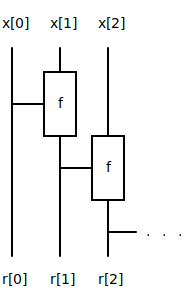

data.vector ≡
Operations on variable-length arrays.
This module is intended to be imported qualified, to avoid name
clashes with data.array functions. For example:
import data.vector as Vtemplate <typename T, auto N> struct vector §source
template <typename T, auto N> inline vector<T, N> make_vector(T[N] a, count_t<N> s) §source
Create a vector with specified data and size
template <typename T, auto N> inline vector<T, N> from_array(T[N] a) §source
Construct a vector from an array.
Example
>>> from_array<uint8>({1, 2, 3})
{{1, 2, 3}, 3}template <typename T> inline vector<T, 1> from_optional(optional<T> o) §source
Construct a vector with capacity 1 from an optional. If the optional is invalid then return an empty vector otherwise return a singleton vector.
Example
>>> from_optional({true, 0xFF})
{{0xFF}, 1}template <auto N, typename T> inline vector<T, N> repeat(T x, count_t<N> length) §source
Construct a vector by replicating a value length
times.
Example
>>> repeat<3>(3, 2)
{{3, 3, 0}, 2}
>>> vector<uint8, 2> v = repeat(2, 2)
{{2, 2}, 2}template <typename T, auto N> inline auto at(vector<T, N> v, index_t<N> i) §source
Access element i. Equivalent to v.data[i].
If i is greater than or equal to v.size then a
assert is triggered.
Example
>>> at({{0, 1, 2, 3}, 4}, 2)
2template <typename T, auto N> inline auto front(vector<T, N> v) §source
Return the first element in the vector. Equivalent to
v.data[0]. If the vector is empty then a
assert is triggered.
Example
>>> front({{0, 1, 2}, 2})
0template <typename T, auto N> inline auto back(vector<T, N> v) §source
Return the last element in the vector. Equivalent to
v.data[v.size - 1]. If the vector is empty then a
assert is triggered.
Example
>>> back({{0, 1, 2}, 2})
1template <typename T, auto N> inline count_t<N> size(vector<T, N> v) §source
Return the number of elements. Equivalent to v.size.
Example
>>> size({{1, 2, 3}, 2})
2template <typename T, auto N> inline bool empty(vector<T, N> v) §source
Check whether the vector is empty. Equivalent to
v.size == 0.
Examples
>>> empty({{0, 1, 2}, 0})
true
>>> empty({{0, 1, 2}, 1})
falsetemplate <typename T, auto N> inline count_t<N> capacity(vector<T, N> v) §source
Return the maximum number of elements.
Example
>>> capacity({{0, 1, 2}, 0})
3template <auto M, typename T, auto N> inline vector<T, M> reserve(vector<T, N> v) §source
Reserve M number of elements. If M is less
than v.size then a assert is triggered.
Reserving the same capacity as the input vector returns the orginal
vector.
Examples
>>> reserve<5>({{0, 1, 2}, 3})
{{0, 1, 2, 0, 0}, 3}
>>> reserve<3>({{0, 1, 2, 3, 4}, 3})
{{0, 1, 2}, 3}template <typename T, auto N> inline vector<T, N> resize(vector<T, N> v, count_t<N> length) §source
Resize the vector to contain length elements. Equivalent
to v.size = length;. If length > v.size
then new elements are undefined. If length is greater than
N then a assert is triggered.
Example
>>> resize({{0, 1, 2, 3}, 4}, 2)
{{0, 1, 2, 3}, 2}template <typename T, auto N> inline vector<T, N> clear(vector<T, N> v) §source
Clear the contents. Equivalent to v.size = 0;.
Example
>>> clear({{0, 1, 2, 3}, 4})
{{0, 1, 2, 3}, 0}template <typename T, auto N> inline vector<T, N> insert(vector<T, N> v, index_t<N> pos, T value) §source
Insert value before position pos in vector
v. If pos > v.size or
v.size >= N then a assert is triggered.
Example
>>> insert({{0, 0, 0, 0}, 3}, 2, 0x20)
{{0, 0, 0x20, 0}, 4}
>>> insert({{0xFF, 0xFF}, 0}, 0, 0)
{{0, 0xFF}, 1}template <typename T, auto N> inline vector<T, N> erase(vector<T, N> v, index_t<N> pos) §source
Erase element at position pos from vector
v. If pos >= v.size or the vector is empty
then a assert is triggered.
Example
>>> erase(1, {{0, 1, 2}, 3})
{{0, 2, 2}, 2}template <typename T, auto N> inline vector<T, N> push_back(T x, vector<T, N> v) §source
Append element x to the end of vector v. If
v.size >= N then a assert is triggered.
Example
>>> push_back(0xFF, {{0, 1, 2}, 2})
{{0, 1, 0xFF}, 3}template <typename T, auto N> inline vector<T, N> pop_back(vector<T, N> v) §source
Remove the last element of the vector. If the vector is empty then a
assert is triggered.
Example
>>> pop_back({{0, 1, 2, 3}, 2})
{{0, 1, 2, 3}, 1}template <typename T, auto N> inline vector<T, N> append(vector<T, N> x, vector<T, N> y) §source
Append vectors. If the sum of the vector sizes is greater than
N then a assert is triggered.
Examples
>>> append({{1, 2, 0, 0}, 2}, {{3, 4, 0, 0}, 2})
{{1, 2, 3, 4}, 4}
>>> append({{1, 2, 3}, 2}, {0xFF, 0xFF, 0xFF}, 0})
{{1, 2, 3}, 2}
>>> append({{1, 2, 3}, 0}, {{0xFF, 0xFF, 0xFF}, 2})
{{0xFF, 0xFF, 3}, 2}template <typename T, auto N> inline auto map((T) -> auto f, vector<T, N> x) §source
Map vector of input values to result values.

Example
>>> map(increment, {{1, 2, 3, 4}, 3})
{{2, 3, 4, 0}, 3}template <typename T, auto N> inline vector<T, N> gather(bool[N] valids, T[N] data) §source
Gather entries in data that are marked as valid to the front of an array, maintaining ordering, and return the resulting array.
Example
data = {1, 2, 3, 4, 5, 6, 7, 8}
valids = {false, true, false, true, true, false, false, true}
result = { {2, 4, 5, 8, X, X, X, X}, 4 } where X is undefinedtemplate <typename T, auto N> inline vector<T, N> scatter(bool[N] valids, T[N] data) §source
Scatter the entries in data into the entries marked as true in the valid array.
Example
data = {2, 4, 5, 8, 0, 0, 0, 0}
valids = {false, true, false, true, true, false, false, true}
result = { {X, 2, X, 4, 5, X, X, 8 }, 4 } where X is undefinedtemplate <typename T, auto N> inline vector<optional<T>, N> unique_by((T, T) -> bool equality_fn, vector<T, N> v) §source
De-duplicate vector elements with user-supplied equality predicate. For each element e, check the previous elements for duplicates. If there are any duplicates, mark element e as invalid. Return a vector of optionals where all valid elements are unique.
Example
>>> unique_by(optional::equal, {{{true, 1}, {false, 1}, {true, 1}}, 3})
{{{true, {true, 1}}, {true, {false, 1}}, {false, {true, 1}}}, 3}template <typename T, auto N> inline vector<optional<T>, N> unique(vector<T, N> v) §source
De-duplicate vector elements. Similar to unique_by but
uses the == operator. For each element e, check the
previous elements for duplicates. If there are any duplicates, mark
element e as invalid. Return a vector of optionals where all valid
elements are unique.
Examples
>>> unique({{1}, 1})
{{{true, 1}}, 1}
>>> unique({{1}, 0})
{{{false, 0}}, 0}
>>> unique({{1, 2}, 2})
{{{true, 1}, {true, 2}}, 2}
>>> unique({{1, 1}, 2})
{{{true, 1}, {false, 1}}, 2}
>>> unique({{1, 1}, 1})
{{{true, 1}, {false, 0}}, 1}
>>> unique({{1, 2, 3, 2}, 4})
{{{true, 1}, {true, 2}, {true, 3}, {false, 2}}, 4}
>>> unique({{1, 2, 3, 2}, 2})
{{{true, 1}, {true, 2}, {false, 0}, {false, 0}}, 2}template <typename T, auto N> inline auto reduce((T, T) -> T f, vector<T, N> v) §source
Implement a binary reducer tree using a function to reduce a pair of inputs.

Examples
>>> reduce(add, {{0x9, 0x2, 0x5}, 3});
0x10
>>> reduce<bool>([](bool x, bool y){ return x || y; }, {{false, true, false}, 2});
true
>>> reduce(add<uint8, uint8>, {{2}, 1})
2
>>> reduce(add<uint8, uint8>, {{1, 2, 3}, 2})
3template <typename R, typename T, auto N> inline R map_reduce((T) -> R map_fn, (R, R) -> R reduce_fn, vector<T, N> v) §source
Implements map-reduce. Inputs are first mapped into the appropriate
result type R and then reduced to a single output using a
binary reduction tree.
Example
>>> map_reduce
( [](uint8 a){ return a % 2 == 0; }
, [](bool x, bool y){ return x && y; }
, {{2, 4, 7}, 2}
);
truetemplate <auto N> inline bool or(vector<bool, N> v) §source
Return true if any of the elements are true. Return false if the vector is empty.
Examples
>>> or({{false, false, true}, 3})
true
>>> or({{false, false, true}, 2})
false
>>> or({{false, false, true}, 0})
falsetemplate <auto N> inline bool and(vector<bool, N> v) §source
Return true if all of the elements are true. Return true if the vector is empty.
Examples
>>> and({{true, true, false}, 3})
false
>>> and({{true, true, false}, 2})
true
>>> and({{true, true, false}, 0})
truetemplate <typename T, auto N> inline bool any((T) -> bool predicate, vector<T, N> v) §source
Return true if any of the elements satisfy the predicate. Return false if the vector is empty.
Examples
>>> any(even, {{1, 3, 6}, 3})
true
>>> any(even, {{1, 3, 6}, 2})
false
>>> any(even, {{1, 3, 6}, 0})
falsetemplate <typename T, auto N> inline bool all((T) -> bool predicate, vector<T, N> v) §source
Return true if all of the elements satisfy the predicate. Return true if the vector is empty.
Examples
>>> all(odd, {{1, 3, 6}, 3})
false
>>> all(odd, {{1, 3, 6}, 2})
true
>>> all(odd, {{1, 3, 6}, 0})
truetemplate <typename T, auto N> inline auto minimum(vector<T, N> v) §source
Return the minimum element from a vector of integers. Return undefined if the vector is empty.
Examples
>>> minimum({{4, 64, 2}, 3})
2
>>> minimum({{4, 64, 2}, 2})
4template <typename T, auto N> inline auto maximum(vector<T, N> v) §source
Return the maximum element from a vector of integers. Return undefined if the vector is empty.
Examples
>>> maximum({5, -23, 182}, 3})
182
>>> maximum({5, -23, 182}, 2})
5template <typename R, typename T, auto N> inline R sum(vector<T, N> v) §source
Sum of the vector elements. Return undefined if the vector is empty.
Examples
>>> sum({{3, -9, 7}, 3})
1
>>> sum({{3, -9, 7}, 2})
-6template <typename T, auto N> inline optional<T> first_valid(vector<optional<T>, N> v) §source
Given a vector of optional<T>, return the first
(lowest vector index) valid element. If there are no valid elements or
the vector is empty then return invalid.
Examples
>>> first_valid({{{true, 1}, {false, 2}, {true, 3}}, 3})
{true, 1}
>>> first_valid({{{false, 1}, {false, 2}, {true, 3}}, 2})
{false, 2}
>>> first_valid({{{true, 1}, {false, 2}, {true, 3}}, 0})
{false, 0}template <typename T, auto N> inline optional<T> last_valid(vector<optional<T>, N> v) §source
Given a vector of optional<T>, return the last
(highest vector index) valid element. If there are no valid elements or
the vector is empty then return invalid.
Examples
>>> last_valid({{{true, 1}, {false, 2}, {true, 3}}, 3})
{true, 3}
>>> last_valid({{{true, 1}, {false, 2}, {true, 3}}, 2})
{true, 1}
>>> last_valid({{{false, 1}, {false, 2}, {true, 3}}, 2})
{false, 1}
>>> last_valid({{{true, 1}, {false, 2}, {true, 3}}, 0})
{false, 0}template <typename R, typename T, auto N> inline vector<R, N> map_optional((T) -> optional<R> f, vector<T, N> v) §source
Return a vector containing only valid mapped elements.
Example
>>> map_optional( [](uint8 x)
{
return make_optional(odd(x), x);
}
, {{1, 2, 3}, 3}
)
{{1, 3, 0}, 2}
>>> map_optional( [](uint8 x)
{
return make_optional(even(x), x);
}
, {{1, 2, 3}, 3}
)
{{2, 3, 0}, 1}template <typename T, auto N> inline vector<T, N> cat_optionals(vector<optional<T>, N> v) §source
Return a vector containing only valid input elements.
Examples
>>> cat_optionals({{{false, 0}, {true, 1}, {true, 2}}, 3)
{{1, 2, 0}, 2}
>>> cat_optionals({{{true, true}, {true, false}, {true, true}}, 2})
{{true, false, false}, 2}template <typename S, auto N, typename T, auto M> inline auto zip_with((S, T) -> auto f, vector<S, N> s, vector<T, M> t) §source
Combine elements of two vectors using specified function. Any
remaining elements of the longer vector are dropped. The capacity of the
zipped vector is the minimum of N and M.

Examples
>>> zip_with(add, {{1, 2, 3, 4}, 3}, {{1, 2, 3, 4, 5}, 4})
{{2, 4, 6, 0}, 3}
>>> zip_with(add, {{1, 2, 3, 4}, 3}, {{0}, 0})
{{0}, 0}
>>> zip_with(make_optional, {{true, false, true}, 3}, {{-22, 5}, 2})
{{{true, -22}, {false, 5}}, 2}template <typename S, auto N, typename T, auto M> inline auto zip(vector<S, N> s, vector<T, M> t) §source
Combine two vectors into a vector of pairs. Any remaining elements of
the longer vector are dropped. The maximum size of the zipped vector is
the minimum of N and M.
Examples
>>> zip({{1, 2}, 2}, {{true, false}, 2})
{{{1, true}, {2, false}}, 2}
>>> zip({{1, 2}, 2}, {{1, 2, 3}, 3})
{{{1, 1}, {2, 2}}, 2}template <typename L, typename R, typename T, auto N> inline pair<vector<L, N>, vector<R, N>> unzip_with((T) -> tuple2<L, R> f, vector<T, N> v) §source
Transform a vector v into a pair of vectors using a
projection f.
Example
>>> unzip_with(optional_to_pair, {{{true, 1}, {false, 2}, {true, 3}}, 2})
{{{true, false, false}, 2}, {{1, 2, 0}, 2}}template <typename L, typename R, auto N> inline pair<vector<L, N>, vector<R, N>> unzip(vector<pair<L, R>, N> v) §source
Transform a vector of pairs into a pair of vectors.
Example
>>> unzip({{{0, 0}, {-1, 1}, {-2, 2}, {-3, 3}}, 4})
{{{0, -1, -2, -3}, 4}, {{0, 1, 2, 3}, 4}}
>>> unzip({{{0, 0}, {-1, 1}, {-2, 2}, {-3, 3}}, 3})
{{{0, -1, -2, 0}, 3}, {{0, 1, 2, 0}, 3}}
>>> unzip({{{0, 0}, {-1, 1}, {-2, 2}, {-3, 3}}, 0})
{{{0, 0, 0, 0}, 0}, {{0, 0, 0, 0}, 0}}template <typename R, typename T, auto N> inline vector<R, N> inclusive_scan(vector<T, N> input, (R, R) -> R AssociativeFn) §source
Perform an inclusive scan on the given vector.
Example
>>> inclusive_scan({{1, 2, 3}, 3}, add)
{{1, 3, 6}, 3}template <typename R, typename T, auto N> inline vector<R, N> prefix_sum(vector<T, N> v) §source
Compute the prefix sum of the given vector.
Examples
>>> prefix_sum({{0, 1, 2, 3}, 4})
{{0, 1, 3, 6}, 4}
>>> prefix_sum({{0, 1, 2, 3}, 3})
{{0, 1, 3, 3}, 3}
>>> prefix_sum({{0, 1, 2, 3, 4}, 3})
{{0, 1, 3, 0, 0}, 3}
>>> prefix_sum({{5}, 1})
{{5}, 1}
>>> prefix_sum({{5}, 0})
{{5}, 0}
>>> prefix_sum({{3, 2, 1}, 2})
{{3, 5, 1}, 2}template <typename T, auto N, auto M> inline bool equal_by((T, T) -> bool equality_fn, vector<T, N> x, vector<T, M> y) §source
Element-wise equality comparison of vectors using specified function. Return false if the vectors differ in size.
Examples
>>> equal_by( optional::equal
, {{{true, 0x23}, {false, 0xFF}, {true, 0x19}, {false, 0x20}}, 4}
, {{{true, 0x23}, {false, 0x00}, {true, 0x19}}, 3}
)
false
>>> equal_by( optional::equal
, {{{true, 0x23}, {false, 0xFF}, {true, 0x19}, {false, 0x20}}, 3}
, {{{true, 0x23}, {false, 0x00}, {true, 0x19}}, 3}
)
truetemplate <typename T, auto N, auto M> inline bool equal(vector<T, N> x, vector<T, M> y) §source
Element-wise comparison of vectors for equality using
==. Return false if the vectors differ in size.
Examples
>>> equal({{1, 2, 3}, 3}, {{1, 2, 3, 4}, 4})
false
>>> equal({{1, 2, 3}, 3}, {{1, 2, 3, 4}, 3})
truetemplate < auto Shards, auto N, typename T, auto MaxCallerThreads = max_threads_limit > inline auto sharded_map( (index_t<Shards>, T) -> auto f, (T) -> index_t<Shards> get_shard_idx, vector<T, N> x ) §source
Transform a vector containing up to N elements according
to a caller-specified function (f). Computation is spread
across Shards instances of f.
get_shard_idx is used to determine which instance processes
each element. Each instance can transform at most one input element per
cycle. Return type is a vector with the same size as the input
vector.
Parameters
-
auto ShardsNumber of replicas to
fto instantiate. -
auto NMaximum number of input/output elements.
-
typename TType of each input element.
-
auto MaxCallerThreads = max_threads_limit
Maximum number of threads concurrently executing inside of
parallel_map. Caller must ensure this limit is not exceeded.
template < auto Shards, auto N, typename T, auto MaxCallerThreads = max_threads_limit > inline void sharded_for_each( (index_t<Shards>, T) -> void f, (T) -> index_t<Shards> get_shard_idx, vector<T, N> x ) §source
Execute a caller-specified function (f) once for each
input element. Computation is spread across Shards
instances of f. get_shard_idx is used to
determine which instance processes each element. Each instance can
transform at most one input element per cycle.
Parameters
-
auto ShardsNumber of replicas to
fto instantiate. -
auto NMaximum number of input/output elements.
-
typename TType of each input element.
-
auto MaxCallerThreads = max_threads_limit
Maximum number of threads concurrently executing inside of
parallel_map. Caller must ensure this limit is not exceeded.